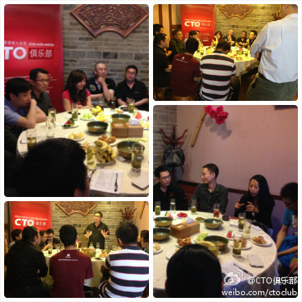

多谢鼓励。 //@段东旭-Jeff:这种方式比以前的效果要好很多 //@我就是李茗:今天与各位交流很受益，观点碰撞激烈，真理越辨越明，激情却也不失理性…@CTO俱乐部:CTO俱乐部第98期下午茶活动已经圆满结束了，感谢各位@Ada李力 @CSDN闫辉 @段东旭-Jeff @恺墨@Born白清杰（没有提到的可以@哈）的参与，大家对创业想法还是蛮多的啊，现场氛围很是热烈，尤其后面对云计算方面的讨论成为了热点~@我就是李茗，我们以后会多多举办这样的小型聚会供大家更多的交流。 